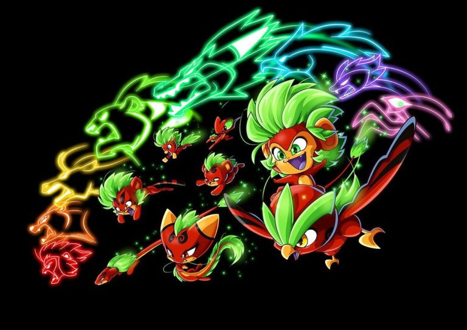
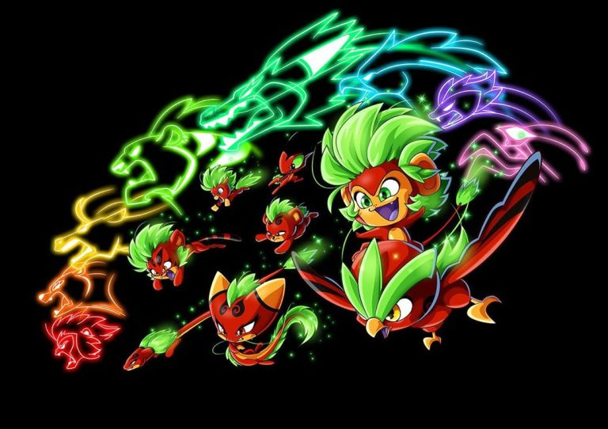

Kwamis are divine beings that are formed whenever a new abstract
idea or emotion comes into existence in the universe, such as
creation, love, beauty, and mathematics. The very first Kwami ever
to come into existence is Tikki, the Kwami of Creation, who came
into existence upon the creation of the universe. All of the
Kwamis know each other and journeyed across the universe for eons.
During their travels, they found their way to Earth and at some
point and discovered their magical powers, born from the abstract
concepts that they respectively embody, with Plagg using his
powers to cause the extinction of the dinosaurs. That's when the
kwamis realized, even though their powers were great, they were
too strong and unfocused, leading to great damage. During their
ancient past, the kwamis witnessed the rise of humanity and with
it, from 5 to 7 million years ago, the birth of their "cousins"
the Renlings. However, the Kwamis were spirit-like, and thus
couldn't be perceived by regular, tangible lifeforms, such as
humans, and were therefore unable to interact with them. Despite
that they had a deep yearning to learn more about humans
unknowingly observing them.

 
